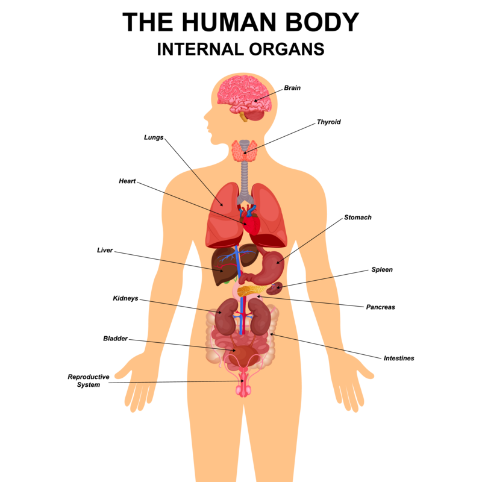

<!--- 350 x 350 
1. detalle 
2. conectar todos mediante links y al darle click te mande a esa página
etiqueta a ocupar es map


<map name =#cuerpo>
    <area shape = "rect" coords ="194, 56, 232, 73" href="wikipedia.com/" target="derecha">
    <area shape = "rect" coords ="78, 121, 117, 73" href="wikipedia.com/">
    <area shape = "circle" coords ="180, 111, 20" href="wikipedia.com/">  
        
</map>
si no es el tamaño de 350 no va a funcionar, debe de ser el tamaño correcto de la imagen
la navegación debe de ser en el mismo frame

agregar css si se puede, poner tres partes del cuerpo humano o más si se puede: 
corazón, cerebro y otro

poner un tipo login (ventana) que pida el nombre al que ingrese, este se mostrará
en la parte A como: Bienvenido(a) (nombre).
--->
<style>
     h1{
        color:red;
        font-family: 'Franklin Gothic Medium', 'Arial Narrow', Arial, sans-serif;
        font-size: 20px;
     }
</style>
<script> 
a = 10
b= 20
resultado = a + b
alert(resultado)
document.write("El resultado es: <b> <font color=red>" + resultado + "</font></b>")
</script>

<!--- Ejercicio 7
Hacer una tabla con javascript que pide primeramente tu nombre y en la misma 
tabla que será de la siguiente manera: 
nombre , sueldo diario, días trabajando, total 

y en la casilla nombre se pondra el nombre que se ingreso en la primera ventana, después 
ingresará el sueldo diario y los días trabajando, al final eso lo multiplicará y dará
el total -->